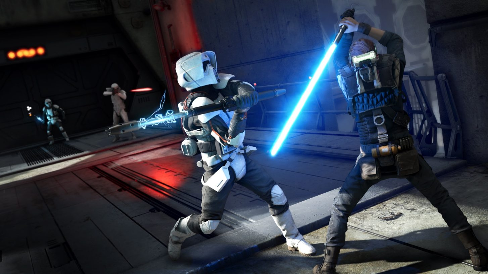

Vale a pena jogar Star Wars Jedi: Fallen Order?Tudo que você precisa saber:Star Wars: Jedi Fallen Order chegou complementando tudo que faltava na franquia Star Wars. Uma aventura épica single player cheia de histórias paralelas para você entender e ligar os pontos. Se você está lendo essa matéria, provavelmente deve estar afim de jogar ou está na dúvida se foi só você que AMOU essa franquia! Saiba que não foi só você, nós também. Star Wars Jedi: Fallen Order conta a história de Cal Kestis, um desmontador de peças como todos os outros no planeta de Bracca. O que parecia ser um simples engenheiro começa a se revelar cada vez mais atrelado com a extinta ordem dos Jedi, forçando o protagonista a fugir dos caçadores do Império com a ajuda de Cere e Greez na nave Mantis. O ritmo da narrativa é um pouco lento no início, mas tudo é feito para situar com calma cada um dos jogadores que está mergulhando nessa história. Sejam eles fãs de longa data ou mesmo um leve conhecedor da trama de Star Wars. Você visita o primeiro planeta para entender melhor o que está acontecendo com tudo: seja com a Força, com Cal ou com o Império que o persegue. Posso dizer que, evitando spoilers, a história com certeza engata em um ritmo muito mais emocionante e envolvente com o passar do tempo. Pode apostar nisso. E, para os fãs de longa data de Star Wars, Fallen Order é um prato cheio de ambientação fiel. Com a ajuda do simpático robozinho BD-1, Cal coleta informações que são armazenadas em um banco de dados completo para a consulta posterior. Isso ajuda tanto os que são pouco familiarizados quanto aqueles que são sedentos pelos mínimos detalhes na extensa “lore” da franquia. |
||
| Quero receber todas as análises! | ||